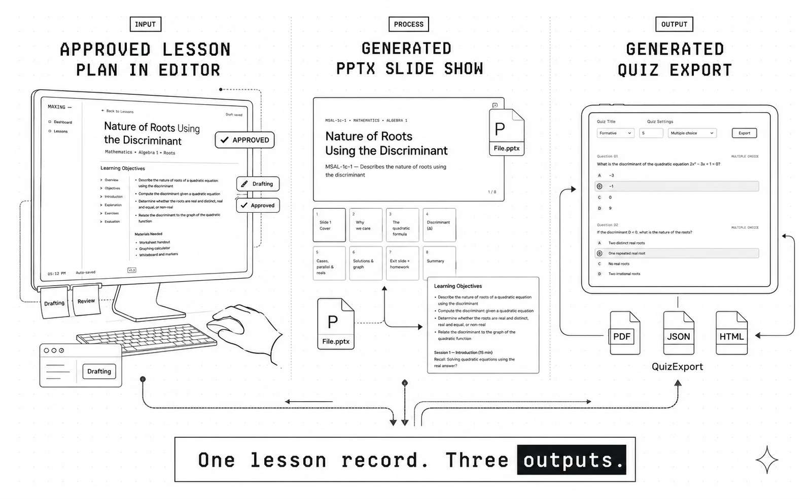

Streamlining Lesson Planning for Philippine Public School Teachers
AI-assisted lesson planning for Philippine public school teachers. Led end-to-end from PRD to shipped front end — a draft-first AI workflow that generates lesson plans, slides, and quizzes from one approved record while keeping the teacher accountable for every output.
Teachers were starting from scratch every week
MATATAG's competency-based curriculum demands more structured planning, not less. Teachers were starting from scratch every week. Most tools were too generic to help, and AI felt risky without a clear accountability model.
The core tension: AI could reduce this workload significantly — but in a classroom context, unchecked AI output is a liability, not an asset. Teachers feared being blamed for content they didn't fully review. That accountability anxiety shaped every major design decision.
What success looked like
- Cut weekly lesson prep time to a single session
- Generate lesson plan, slides, and quiz from one input
- Make every AI output a draft — teacher approves before anything exports
- Stay aligned to MATATAG competency codes for Grades 6, 9, and 10
Three findings shaped the product
- Teachers copy-paste from old lesson plans and adjust manually — they want a strong starting point, not a blank canvas
- MATATAG's four-section format (objectives, sessions, assessment, inclusion) is consistent enough to template reliably
- Accountability anxiety around AI was stronger than accuracy anxiety — teachers feared being blamed for content they didn't fully review
These findings drove two non-negotiable decisions: a mandatory approval gate and a persistent draft status model.
A smart assistant, not an autopilot
Every AI output starts as a draft. Nothing moves forward without the teacher's explicit sign-off. I structured the workflow linearly — input → draft → edit → approve → generate — because teachers needed predictability.
I ruled out a chat-based interface early. Conversational UI felt too open-ended for a structured curriculum workflow and would have buried required MATATAG fields behind a freeform prompt.
Four decisions that defined the product
Mandatory approval gate
PPT and quiz generation are locked until the teacher signs off. This was the product's core trust mechanism. The trade-off was a slightly longer flow, but it gave teachers a defensible paper trail and directly addressed accountability anxiety.
Structured form over open prompt
Grade, subject, competency, and context are entered via form — not freeform chat. More consistent AI output, less cognitive load. The trade-off was less flexibility for edge cases, noted as a future iteration.
One lesson record as single source of truth
All three outputs — lesson plan, slides, quiz — derive from the same approved JSON. No version drift, no inconsistency between what the teacher approved and what got generated.
Reflection stays teacher-only
The post-class reflection field is locked during planning and never touched by AI. A small decision with a clear signal: some parts of teaching AI should not enter.
Input to export in one session
Where AI helps, where the human stays
The MATATAG lesson format is structured and repeatable enough for AI to draft reliably. Weekly planning — same format, new competency — is exactly where AI reduces friction without replacing judgment.
Human control
- Every AI output is labeled Draft on generation
- Teachers can edit every field before approving
- No file generated from unapproved lesson
- Reflection section never touched by AI
Trust mechanisms
- Draft / Approved status persistent and visible
- Export gated at system level
- Generation failure preserves teacher input
- Never a blank state on error
The approval gate held
End-to-end flow from input to file export completed in a single session. No edge case allowed export of unapproved content. Early feedback from instructional leads consistently highlighted the draft status model as the feature that made them trust the tool.

The approval step is what made me feel like this was actually safe to use in my class.Department Head, Public Secondary School
Reflection & next steps
I'd involve department heads earlier. They surfaced visibility and tracking needs that would have shaped the data model from the start rather than becoming a future iteration.
More Case Studies
Want to work together?
I'm available for product design and AI-augmented design projects.